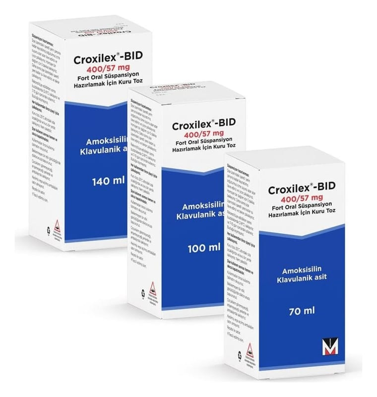

Croxilex-BID 400/57 mg Fort Oral Süspansiyon İçin Kuru Toz, 70 ml

Ne için kullanılır
KT · Bölüm 1CROXİLEX, enfeksiyonların tedavisinde kullanılan bir antibiyotiktir ve enfeksiyona neden olan bakterileri öldürerek işlev görür. Amoksisilin (amoksisilin trihidrat olarak) adı verilen bir penisilin ve amoksisilinin inaktive olmasını engelleyerek işlev gören klavulanik asit (potasyum klavulanat olarak) olmak üzere iki etkin bileşen içerir.
CROXİLEX, sulandırıldığında 70 ml, 100 ml ve 140 ml süspansiyon elde edilen kuru toz halinde kahverengi cam şişelerde bulunmaktadır. Beraberinde 5 ml'lik bir adet ölçü kaşığı bulunur.
CROXİLEX, aşağıdaki durumlarda duyarlı organizmaların neden olduğu bakteriyel enfeksiyonların tedavisinde kullanılır:
● Tekrarlayan bademcik iltihabı, bakterilerin neden olduğu sinüzit, akut orta kulak iltihabı gibi üst solunum yolu enfeksiyonları ● Kronik bronşitin akut alevlenmeleri, akciğer iltihabı gibi alt solunum yolu enfeksiyonları
● İdrar yolu iltihabı, üretra iltihabı, böbreklerin bakteriyel iltihabı, kadın üreme sistemi (genital sistem) enfeksiyonları, belsoğukluğu (gonore) gibi üreme organları ve idrar yolları ile ilgili enfeksiyonlar ● Bağ dokusu iltihabı (selülit), hayvan ısırmaları gibi deri ve yumuşak doku enfeksiyonları ● Diş apseleri gibi diş ve dişeti ile ilgili enfeksiyonlar ● Kemik ve eklem enfeksiyonları (Osteomiyelit gibi)